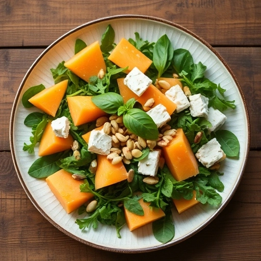
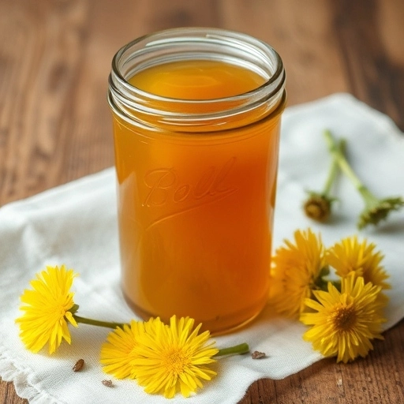

How to identify a dandelion
Identifying a dandelion (Taraxacum officinale) is relatively easy once you know what to look for. This perennial plant is widely recognized for its bright yellow flowers and distinctive leaves.
Heads and leaves of a dandelion
The dandelion’s leaves are long, jagged, and grow in a rosette pattern close to the ground. They are deeply lobed, resembling a tooth shape, which is why the name "dandelion" comes from the French word dent de lion, meaning "lion's tooth."
The yellow flowers are composite, made up of numerous smaller florets that form a rounded, bright head. Dandelion flowers bloom in spring and early summer and are typically around 1 to 2 inches in diameter. Once the flowers have been pollinated, they turn into fluffy seed heads with fine, white puffs that disperse with the wind. The plant's stems are hollow, and if broken, they exude a milky sap.
Where to find dandelions
Dandelions typically grow in lawns, fields, and along roadsides, preferring well-drained soil. If you plan to harvest dandelions, ensure that the plants have not been exposed to pesticides or other chemicals.
Dandelion is a medicine plant
The word officinale in the Latin name for dandelion, means it is officially aproved as a plant for medicines. Dandelion leaves, roots, and flowers are medicinal and edible. The leaves are high in vitamins and minerals, and the roots contain inulin, mucilage, latex resin, and teraxacin. The stems and the juice flowing out of the stems are toxic and should not be used without further knowledge. Harvest the tender leaves in early spring, buds anytime, flowers when fully open, and roots during the fall.
Dandelion in the kitchen
Dandelion leaves can be added to a salad or cooked. They can also be dried and stored or blanched and frozen. On this page you find a recipe for a fresh and tangy dandelion salad made from young dandelion greens, paired with a simple dressing and herbs and cheese.
Flowers can be made into juice and are put onto recipes as a colorful addition. The petals of dandelion flowers are used to create a sweet, floral dandelion wine. The dandelion flower heads are also used to make dandelion jelly made from dandelion flowers. This has a sweet flavour that resembles honey and can therefore be used as a substitute. This recipe is found on this page.
Whether you're foraging for wild ingredients or simply appreciating their beauty, dandelions are versatile and can be enjoyed in many forms.
Recipes with dandelion
Dandelion, Melon, Goat Cheese Salad
- 3 cups dandelion leaves
- 3 cups chopped cantaloupe
- 1 cup crumbled goat cheese
- 2 tablespoons lemon juice
- 1 teaspoon honey
- 1 teaspoon Dijon mustard
- 2 tablespoons extra-virgin olive oil
- ⅓ cup shelled unsalted pistachios, toasted
- ¼ cup torn fresh basil leaves
Ingredients
- Whisk lemon juice, honey, mustard, olive oil, salt and pepper together in a large bowl.
- Add dandelion leaves and cantaloupe. Give a quick toss and transfer on a plate.
- Top with goat cheese, pistachios and basil.
Preparation Instructions
Dandelion Jelly
- 2 cups dandelion petals lightly packed
- 4 cups water
- 4 cups sugar
- 2 Tbs. lemon juice
- 1 box powdered pectin
Ingredients
- Cut the green part of the flower off and place the petals into a quart canning jar. Pour 4 cups of boiling water over the flower petals. Allow them to cool and then place into the fridge for 24 hours.
- Strain the flowers well and squeeze out as much dandelion tea as possible.
- Place into a large pot 3 1/2 to 4 cups of dandelion tea, lemon juice, and pectin. Bring it to a boil. Add sugar and return to a boil while stirring. Boil the jelly for 1 to 2 minutes.
- Remove from the heat and pour into canning jars. Process for 10 minutes in a boiling water bath canner or according to your altitude.